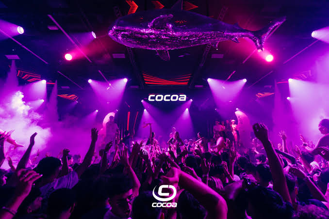

Yo espero que este curso me vaya bien, igual que el anterior, y poder aprobarlo todo para salir con una buena formación y poder ponerme a trabajar para ganar algo de dinero. También me gustaría tener mis propias cosas y poco a poco ser más independiente. A lo mejor después de trabajar un tiempo vuelvo a estudiar para seguir formándome y tener más opciones en el futuro. También me gustaría estudiar para sacarme el carnet de coche, porque creo que tener coche me daría mucha más libertad para ir donde quiera, quedar con mis amigos, hacer rutas, ir a la montaña, a la playa, conocer sitios nuevos y hacer diferentes planes. También quiero pasar más tiempo en casa y con mi familia, porque muchas veces entre los estudios y todo lo demás no estamos tanto juntos como me gustaría. Con mis amigos también quiero seguir haciendo muchos planes. Este verano, por ejemplo, he salido bastante de fiesta con ellos y hemos ido a muchas FMs. También hemos hecho quedadas para ir a la montaña a ver paisajes, pasar el rato y estar juntos, y alguna vez también hemos ido a la playa a ver el amanecer o el atardecer, y la verdad es que esos momentos han estado bastante guapos. Este verano no he ido a ningún sitio fuera de la ciudad ni he hecho ningún viaje, pero igualmente me lo he pasado bastante bien. Ha sido un verano de estar mucho con mis amigos, quedar por el barrio, salir de fiesta y hacer planes casi siempre que podíamos. Muchas veces ni siquiera hace falta irse muy lejos para pasarlo bien, porque estando con tus amigos ya te puedes divertir bastante. En general, espero que este curso me vaya bien, aprobarlo todo y poder terminar con una formación que me sirva para trabajar. También quiero sacarme el carnet de coche cuando pueda y poder disfrutar más con mis amigos haciendo rutas y visitando sitios. Y si en el futuro tengo la oportunidad, tampoco descarto volver a estudiar. De momento quiero ir poco a poco, disfrutar con mis amigos y aprovechar todo lo que pueda
